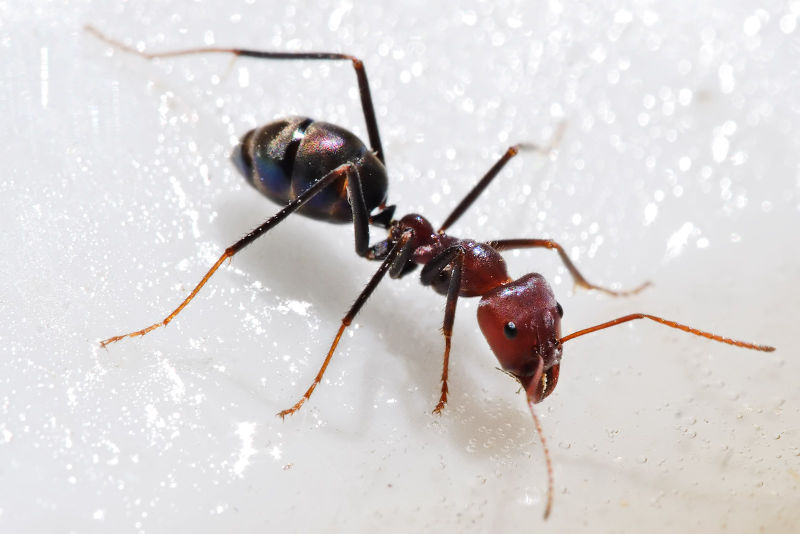
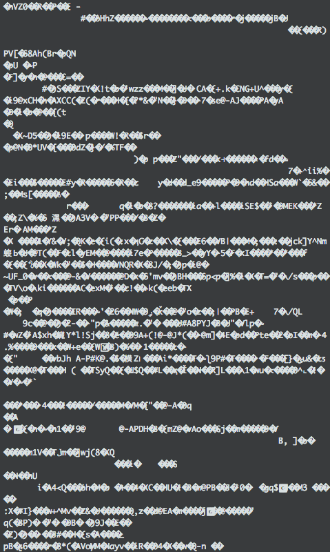

"A rule of thumb among biotech ... is that half of published research cannot be replicated."
- Economist, Oct 2013
"Over half of psychology studies couldn't be reproduced."
- Nature, Aug 2015
Why?
code/data is private
code is hard to install
deployment costs money
code/data is lost
unfortunately, its not that easy. github is steadily increasing in popularity, but many still find it too cumbersome.
git pull --reb origin master
How do scientists reproduce research?
we had to look into how scientists actually do reproduce research today and try to build a solution for them.
How do data scientists collaborate today?
shared university network drives
and email. :(
Mount dropbox into aws!
domain experts aren't developers
domain experts aren't developers.
a domain expert, like a data scientist, will want to focus on the algorithms. the math. the people. the stars.
they don't want to fiddle with configuration. they don't want to endlessly search how to install that C library. or how to resolve conflicts between dependencies. or how to install
git is for source code, and thats ok.
git could work for 90% of the cases, but its an interface created for developers, not for domain experts.
But, we need something like git for data.
How do you build a frictionless git-like tool for data?
the hardest problem we have always had is the interface to dat.
how can we make something that acts like git, but is frictionless?
frictionless
collaboration (noun)
people working together to produce or create something.
computers working together to produce or create something.
the tool should be simple
simple != easy
Why did we chose Node?
C library integrations (leveldb)
AbstractLEVELDown
AbstractLEVELDown
filesystem
mongo
SQL-variants
Google XYZ
var store = require('bittorent-down')
var dat = require('dat')
var db = dat(store) // pseudocode, but you get the idea
Modularity (seprate components)
good at modularity
Commandline and electron app
npm install -g dat
domain experts don't want to worry about installation.
Streams-first (good for big files)
var stream = db.createDiffStream()
stream.on('data', function (data) {
// do something with new data!
})

var hash = require('crypto').createHash('sha256')
var ant = fs.readFileSync('ant.jpg').toString()

var hash = require('crypto').createHash('sha256')
var ant = fs.readFileSync('ant.jpg').toString()
hash.update(ant)
hash.digest('hex')
a a = hash(hash(ant.jpg) + b + c)
/ \ b = hash(bunny.jpg)
b c c = hash(cat.jpg)
If you are trying to establish if you have the same set of files as someone else over a network connection, both sides construct a Merkle DAG using the same hash function, and simply send their latest hash (`a` in the above figure), which is usually small enough to fit in a single network packet. If this value matches then it means that both graphs must contain the exact same data, as that would be the only case that would result in the hashes being equal.
Merkle DAG
Merkle Directed Acyclic Graph
A node may have multiple children and/or multiple parents, but a node may not be the parent of a node that is already in it's own ancestry, as this would create a cyclical relationship.
you can use each node to prove that someone else has the same data and all other previous data referenced in the graph.
var dat = require('dat-graph')
var level = require('level')
var dag = dat(level('./db'))
first node in the graph is the head. no parents (links).
var node = {links: [], value: fs.readFileSync('ant.jpg').toString()}
dag.add(node)
aa4da (head)
adding a node after aa4da (head)
var node = {links: [head], value: fs.readFileSync('bunny.jpg')})
dag.add(node)
var child = hash(node.value) + hash(node.value.length) + hash(head)
bbd32 (new head)
|
aa4da (old head, child of bbd32)
ee0bf <- new node here for merge
/ \
ccdef ddbdf
\ /
bbd32
|
aa4da
// adds hash(data.length) automagically
var sha = require('framed-hash')('sha256')
function add (node) {
// add the node's value to the hash.
sha.update(node.value)
// add hash of all link nodes.
for (var i = 0; i < node.links.length; i++) sha.update(node.links[i])
// get the new unique key for the node
return sha.digest()
}
What is
node.value
?
because we are hashing node.value, if we are storing a lot of data in it, it will be slow. this is the problem with git.
node.value is..
git the entire file (slow!)
git lfs a pointer to the file (faster)
dat a pointer to a file or list of files (a filesystem!)
in dat, each graph node points to the data storage.
this makes it easy to switch out default storage for something else. (bittorrent, anyone?)
or to store the data differently on different computers, using the same graph.
Replication
computer 1 wants to push new merge to computer 2
computer 1
ee0bf <- has new node
/ \
ccdef ddbdf
\ /
bbd32
|
aa4da
computer 2
ccdef ddbdf
\ /
bbd32
|
aa4da
computer 1 says "hey, I want to push to you"
dat push http://dat.computer2.edu
computer 1 says "I have these nodes, check it out."
[aa4da, bbd32, ccdef, ddbdf, ee0bf]
computer 2 says "ok, cool. from those, I have these ones:"
[1, 1, 1, 1, 0]
How does computer 2 know which ones are missing?
remember, a merkle dag has no cycles. How do I find a particular node in a graph?
Binary search
An easy answer is binary search, although we might get more clever later.
It doesn't matter.but truthfully it doesn't matter!
Separate replication protocol from on-disk format from graphone of the first proposals for a simple protocol to separate replication from on-disk format.
computer 1 is like "ok here is what you didn't have"
{links: [ccdef, ddbdf], value: 'some value'}
ee0bf
/ \
ccdef ddbdf
\ /
bbd32
|
aa4da
git pull --reb origin master
HTTP
Websockets
SSH
Carrier pidgeon
defaults:
dat-graph leveldb binary-search merkle dag
dat-blob-store content-addressable filesystem
dat-stream-replicator protobuffers over http
Generalized and modular Merkle DAG for everyone
it means we can implement different kinds of graph algorithms


 and email. :(
and email. :(
 Mount dropbox into aws!
Mount dropbox into aws!